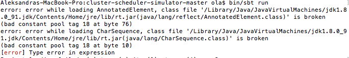
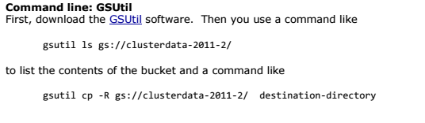
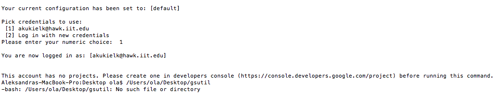
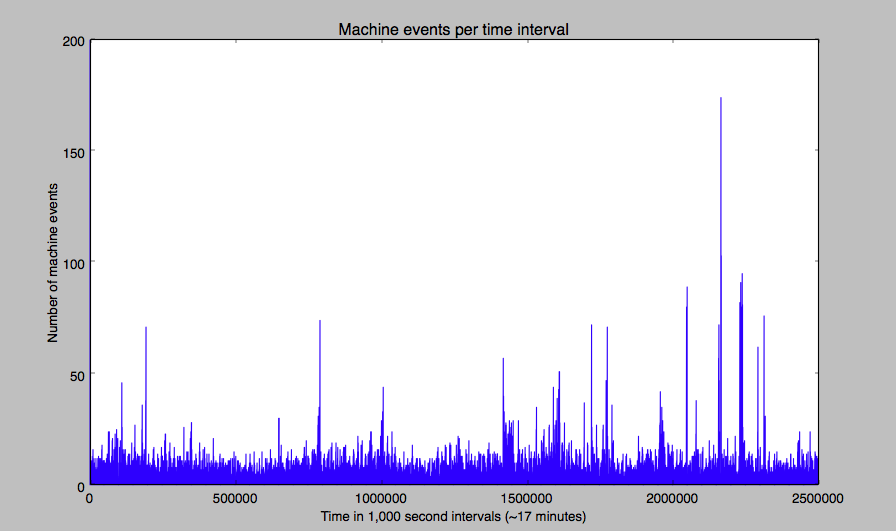
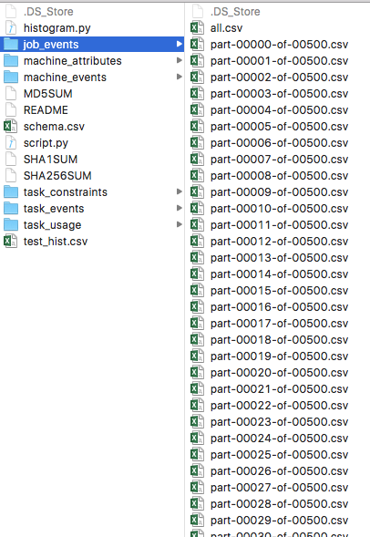
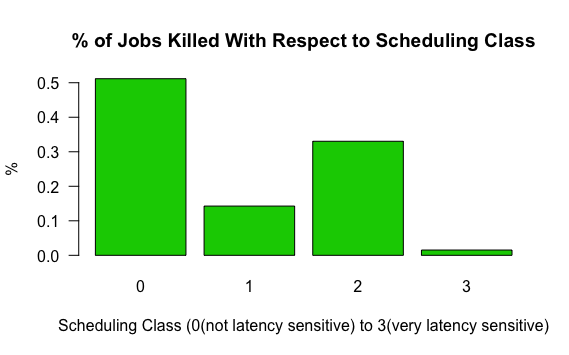
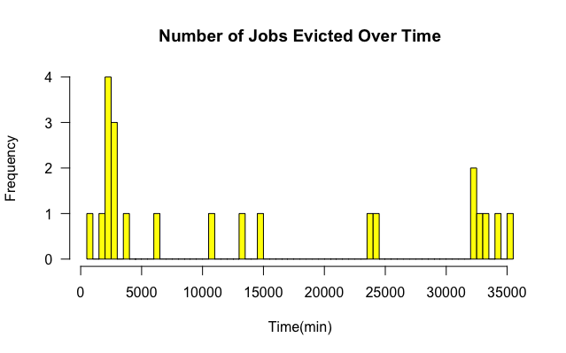
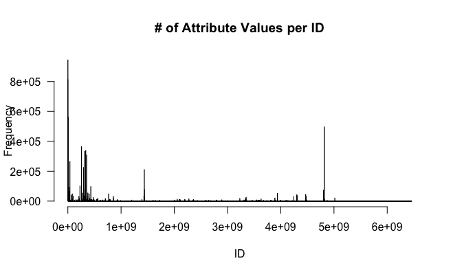
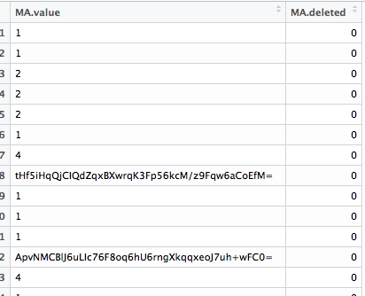
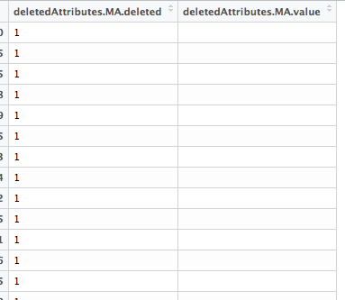

Aleksandra Kukielko
Week 1
In the first three weeks, I was to prepare myself for the material. In the first week, I read the following research papers: Mesos, Omega and Borg. All three of the papers pertain to methods of optimizing cluster systems between real life frameworks. I was a little bit familiar with the concept from taking CS450, however, these papers obviously went into much more detail than what I was familiar with. I went over these papers several times, taking detailed notes to make sure I understand as much as I can from these. For now, I have no quesitons about these concepts; I am sure some will pop up with practice. However, for now I trust the authors to know what they are talking about. I also met with professor Zhiling Lan and discussed my plans and actions for the next three weeks.
Week 2
As the first week came to a close, I made sure that I understood the three cluster/scheduler concepts. I finished up my notes and self study. These research papers were taking a long time to comprehend, especially with such elaborate language. The next step I made was to read the following blog, which summarized the papers really well. I have also downloaded the cluster scheduler simulator and the Hadoop simulator. I actually have some trouble with the cluster simulator. After some time and installing packages, I was able to install everything correctly without any errors. However, when I run the command given "bin/sbt run" I get the following error:

I have no idea what to do at this point.I figured it has to do with the Java version(8 instead of 7), however, I can't figure out how to downgrade properly. I do have some hours left to work this weekend, and I will use the remainder of my time this week to trouble shoot this.
Week 3
Incorporating the Google trace logs into the simulator:
It seems that I've come into another roadblock. In order to download the trace files, the instructional
pdf says to install GSUtil software. It links it there, and I believe I followed the correct instructions,
however, upon trying to execute any GSUtil command such as the one given

I get a message that gsutil is not installed: 
There's not a lot of help online but I will continue trying to find a solution.
Update: I did post to the forum of the simulators and it's been about 7 days, and I have not gotten a response from the author, unfortunately. I have also asked a CS graduate student for help. I asked him if he could try instaling it himself. He came up with the exact same problem as
I and suggested that I try running it on a virtual machine. Therefore, I'm currently installing ubuntu as a dual boot on my computer to see if I'll be able to execute this on Linux
Week 4
After almost as many attempts on the Google Cluster Simulator, I have successfully installed Hadoop following these instructions. I have version 2.7.2 running on the latest version of Ubuntu. Unfortunately, I couldn't get it to run on Mac, but this will suffice.
However, I am happy that I was able to get it running! I haven't done much with it but for now, from starting it, I'm getting this output:
hduser1@olakuk:~$ jps
11088 sun.tools.jps.Jps
6433 ResourceManager
5941 NameNode
6087 DataNode
6271 SecondaryNameNode
6735 NodeManager
which, according to the guide, means the program is working properly. I look forward to working on it more today.
UPDATE: Today's Hadoop experience was a little bit negative. Upon installing, I was ready to launch a sample run on the simulator. I used the official instructions as a model.
As given in the Usage section, the correct way to input a run is
$HADOOP_ROOT/share/hadoop/tools/sls/bin/slsrun.sh
--input-rumen|--input-sls=
I wasn't sure at first how this format would look on an actual example, and I changed up my input several times until the machine was satisfied with it. In the end, I ended up running
/usr/local/hadoop/share/hadoop/tools/sls/bin/slsrun.sh --input-rumen=2job2min-rumen-jh.json --output-dir=/home/olakuk/Desktop/ --track-jobs=job_1369942127770_1205
where 2job2min-rumen-jh.json is a sample trace given, and job_1369942127770_1205 is the jobID of the first job in that trace file. However, upon execution, I just got an infinite loop of this message:
16/06/08 21:34:18 WARN metrics.CsvReporter: Error writing to sampler.scheduler.operation.handle.timecost
java.io.IOException: No such file or directory
at java.io.UnixFileSystem.createFileExclusively(Native Method)
at java.io.File.createNewFile(File.java:1012)
at com.codahale.metrics.CsvReporter.report(CsvReporter.java:241)
at com.codahale.metrics.CsvReporter.reportHistogram(CsvReporter.java:212)
at com.codahale.metrics.CsvReporter.report(CsvReporter.java:158)
at com.codahale.metrics.ScheduledReporter.report(ScheduledReporter.java:116)
at com.codahale.metrics.ScheduledReporter$1.run(ScheduledReporter.java:87)
at java.util.concurrent.Executors$RunnableAdapter.call(Executors.java:511)
at java.util.concurrent.FutureTask.runAndReset(FutureTask.java:308)
at java.util.concurrent.ScheduledThreadPoolExecutor$ScheduledFutureTask.access$301(ScheduledThreadPoolExecutor.java:180)
at java.util.concurrent.ScheduledThreadPoolExecutor$ScheduledFutureTask.run(ScheduledThreadPoolExecutor.java:294)
at java.util.concurrent.ThreadPoolExecutor.runWorker(ThreadPoolExecutor.java:1142)
at java.util.concurrent.ThreadPoolExecutor$Worker.run(ThreadPoolExecutor.java:617)
at java.lang.Thread.run(Thread.java:745)
There is not much help online to this specific problem and this message doesn't even provide much information as to which file has the error. I'm thinking that it's not on my side, but I don't know. I'd just like to get this sample run going, so I can finally start implementing some concrete thinking into the simulator. I am hoping my research meeting tomorrow will be able to point me to some next steps.
Week 5
Because of my efforts being stuck for some time, I have been giving a slightly modified project. It involves analysis of very large datasets describing hundreds of jobs from traces such as the 2011 Google Cluster Data, Exploratory Testing Architecture Traces and Borg machine traces. There are hundreds of files, all with information on these specific jobs. These job traces include information such as start time, submit time, event type, task memory, CPU usage. Based on this paper entitled Experience with using the Parallel Workloads Archive I am to conduct a similar analysis on my given traces. I have read through the paper and learned a lot. In the Computer Science field, data quality is just as important as in other experimental fields, however, this area is very underdeveloped, which can lead to inconsistencies and inaccuracies for people relying on this data. For the next four weeks, including this one, I am parsing through my data and and trying to find patterns, irregularities and trying to explain them with similar causes as in the research paper.
Starting off, I have three separate sources of data. After trying to look up how to open 500 .csv files at once, I have summed up the number of entires to be a couple million. It's a lot to go through, and I'm home I'm not being horribly innefficient by using excel to house the data. I'm going to brush up on python scripting and plotting.
Week 6
I have spent this week learning how to open up csv files in a python reader, saving them to lists and being able to plot them upon running. First, I was able to come up with this graph:

Which, despite the lack of labels, was actually a confirmation that I was on the right path. The x axis represents the time passed, and the y axis represents jobs submitted, however, it was only a tiny slice, simplified.
The below graph is a more concrete example.

It contains the entirety of the machine_events csv file in the 2011 cluster data trace. The graph itself is pretty self explanatory, it's a frequncy chart (I did not use the built in histogram function in matplotlib, I instead built my own script), and can allow me to see if there was a spike in submitted jobs in a certain time interval.
I still have trouble processing a list in its entirety. The machine_events and machine_attributes traces are easy enough, as they only contain a couple thousand entries. However, I'm still trying to figure out how to tackle the million of entires in the job_events trace. I have tried running a simple script on the complete file, and it was coming up blank for over an hour, so I decided to cancel it. There are 500 parts to this trace, so the only way I can think of right now is analyzing samples of the data, not in its entirety.

Week 7
After some consultations with a professor, I have decided to analyze this data using R language and RStudio. I have never worked with R before, so I had to catch up pretty quickly. Howver, I learned that RStudio is much better at opening up millions of entires than just doing it in python scripts. A file of 10,000,000 entries took just a couple of minutes. So far I have analyzed the part of the Google Cluster Data, specifically, Job_Events and Machine_Attributes.
I have come up with some analyses, as shown in example below:



I will be analyzing much more in the future, and I have a couple more ready.
I do have one problem that I cannot seem to solve, and it's specific to RStudio. If I reduce the machine_attributes data to just the relevant data, I have the Values column and the Deleted column. The values range anywhere from 1 to 1800, and there are also some hashed strings in there. The Deleted column is a boolean indicating whether a value was deleted. I wanted to reduce the data to just the ones with a value deleted=1. However, when I do that using the following command:
deletedFrame <- df[df$deleted!=0, ]
the corresponding values do not copy over. Here's a before and after:


I will keep working on the other data and for now have submitted a question to stack overflow.